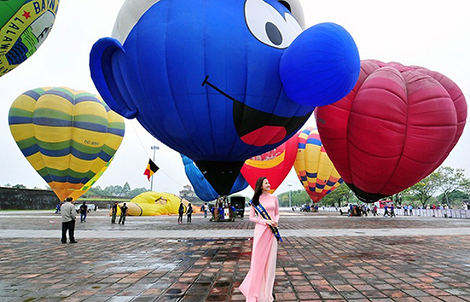
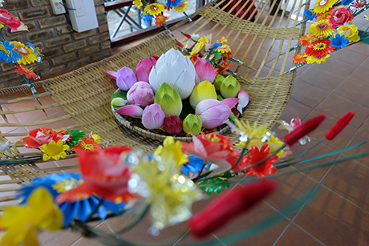

chiếLễ hội đèn lồng Yi Peng do người Lanna khu vực miền Bắc Thái Lan tổ chức. Chiang Mai được biết đến là cái nôi của nền văn hóa Lanna, mỗi khi tới lễ hội đặc biệt này, những đền thờ, ngôi nhà nơi đây đều được trang trí bằng những chiếc đèn lồng đầy màu sắc.
Đến với lễ hội đèn trời Yi Peng bạn sẽ được chiêm ngưỡng hàng nghìn chiếc đèn lồng giấy được thả trên bầu trời. Điều đặc biệt là, những chiếc đèn lồng được trang trí với những thông điệp bằng chữ, đó là những lời cầu nguyện và chúc phúc. Đèn lồng được thả gọi là khom loi, có thể mua những chiếc đèn này ở khắp các ngôi đền tại Chiang Mai.
Từngc đèn lồng được xem là biểu tượng cho sự thoát khỏi mọi nỗi bất hạnh và nhận công đức. Phật giáo quan niệm rằng, nếu chiếc đèn lồng bay lên trên cao và biến mất, thì người đó sẽ gặp được nhiều may mắn và lời cầu nguyện sẽ được Đức Phận chấp thuận. Còn nếu chiếc đèn lồng đó bị cháy giữa chừng khi đang bay, đó là dấu hiệu cảnh báo điều không tốt sẽ xảy ra.
Lễ hội đèn trời Yi Peng diễn ra khi nào? Thời gian diễn ra lễ hội Yi Peng từ ngày 15/12 âm lịch của người Thái Lan, lễ hội diễn ra trong vòng 3 ngày. Lưu ý, lịch âm của người Thái Lan không giống như lịch nước ta, vì vậy lễ hội thường diễn ra vào giữa tháng 11.
Khắp thành phố có rất nhiều nơi diễn ra lễ hội đèn hoa đăng, bạn có thể tới cầu Nawarat trên sông Ping, cổng Tha Phae hay những ngôi đền có sân vườn như Wat Suan Dok và Wat Lok Moli.
Dưới đây là các địa điểm diễn ra lễ hội thả đèn lồng ở Chiang Mai đẹp nhất để chụp ảnh:
Yee Peng Lanna Dhutanka phía sau đại học Maejo: Đây là địa điểm quen thuộc và từng nhiều lần tổ chức lễ hội thả đèn hoa đăng, với sức chứa hơn 3000 người. Lưu ý, bạn cần phải mua vé trước vì vé bán rất nhanh.
Yee Bành Doi Saket: Còn nếu bạn muốn ngắm đèn lồng ở bên ngoài trung tâm thành phố, hãy đến Doi Saket cách khoảng 30km. Với sức chứa 2400 người cùng không gian vùng nông thôn thanh bình. Giá vé là 90 đến 150 USD/người.
